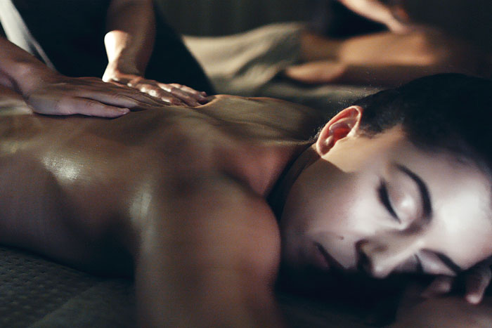
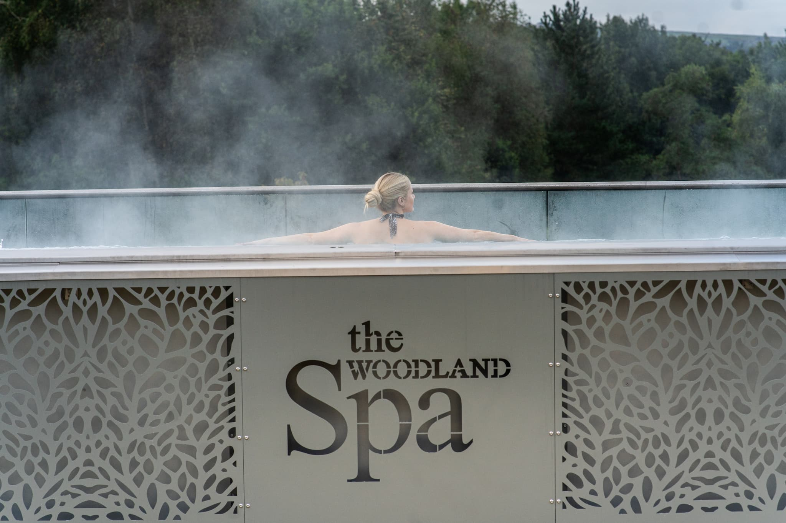
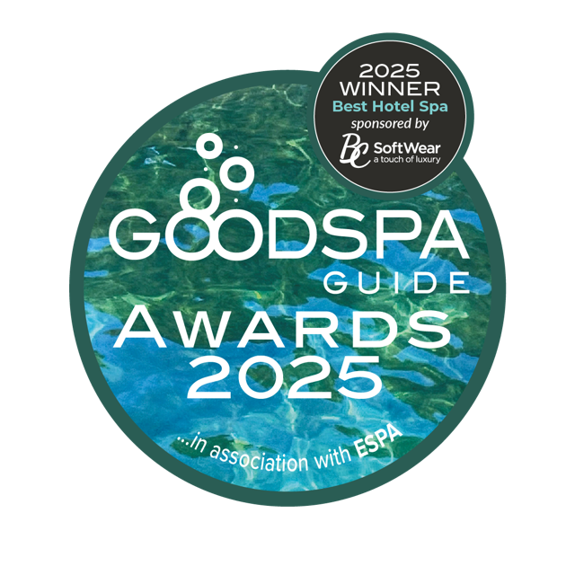
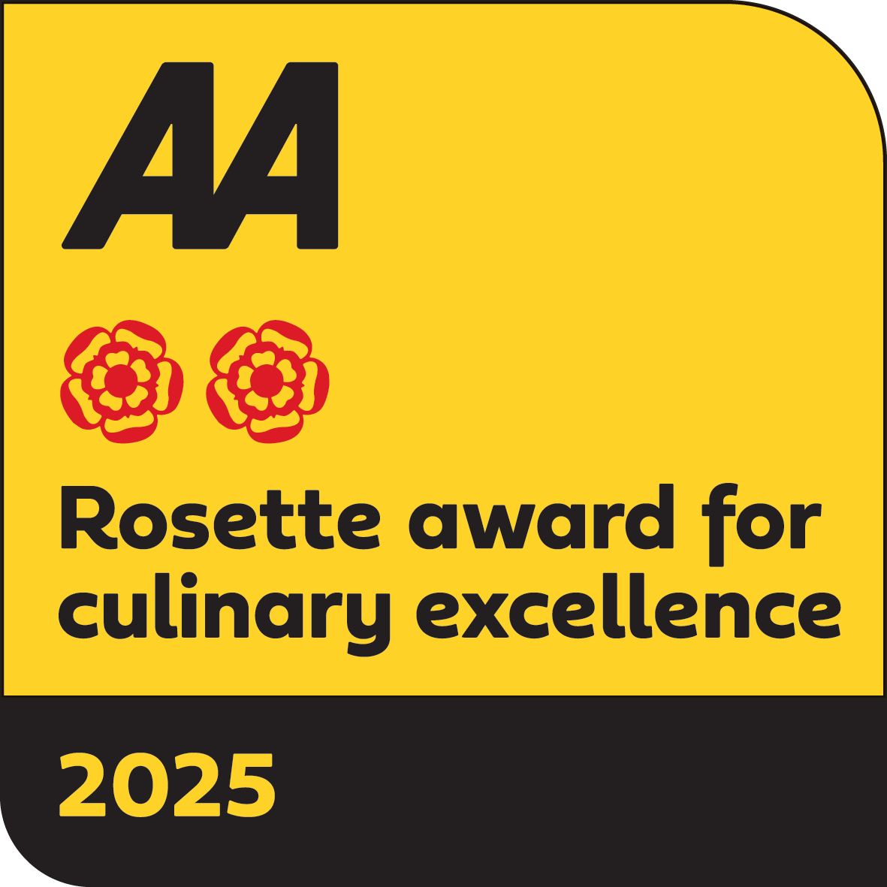

All day
Spa days
Unlimited thermal access, with dining and treatments if you wish.
From £120 per person
See spa days →
100 acres · Lancashire
One of Britain’s most acclaimed thermal spas. A £16 million evolution, a full day to experience it, and all the space you need to disappear.
Welcome to The Woodland Spa
The spa has doubled in size without doubling its guests. From the UK’s first KLAFS ice lounge to the country’s longest infinity-edge spa pool, your thermal journey is yours for the whole day—not a hurried two-hour slot.

The thermal journey
Drift between serenity and vitality pools, rooftop firepits, salt steam, saunas and quiet sensory spaces. Stay for the entirety of your day.
Explore every experienceChoose your pace
Start with the shape of your escape. Then make it personal with treatments and food.

All day
Unlimited thermal access, with dining and treatments if you wish.
From £120 per person
See spa days →
After dark
Four unhurried evening hours through water, heat and ice.
From £85 per person
See evenings →
Stay over
Thermal access, an overnight room and legendary Lancashire breakfast.
From £200 per person
Explore stays →More than an interval
Choose the polished Spa Restaurant, small plates around the Terrace firepit, or a stone-baked pizza high on the Rooftop.
Read the menus
A glimpse inside
From first swim to last light, this is how a Woodland day feels.



Best UK Hotel Spa 2025
The Good Spa Guide

Two AA Rosettes
Dining with distinction
Everything, beautifully joined up
Build spa access, a room, treatments for every guest and your table in one seamless itinerary.
Build your experience →